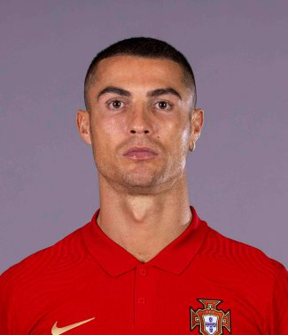
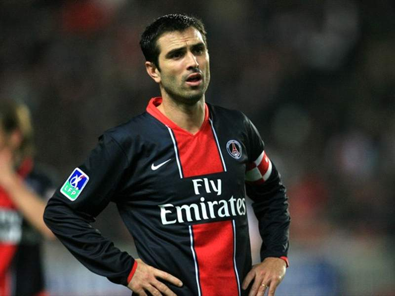
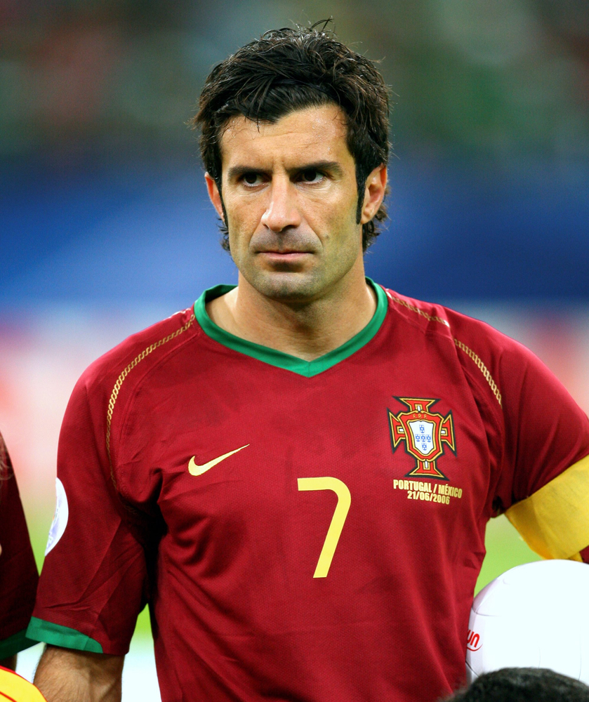
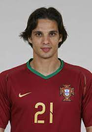

gols - Pauleta
<  /li>gols - Eusébio
gols - Luiz Figo
gols - Nuno gomes

117 gols – Cristiano Ronaldo
Portugal volta a jogar, hoje, em Sóchi, onde jogou com Espanha, na fase de Grupos, a 15 de junho, com um empate 3 a 3. A cidade Sóchi - em russo Со́чи - é uma cidade-resort na Rússia, situada no sudoeste do país, nas proximidades das montanhas do Cáucaso e do mar Negro.
O símbolo de Portugal está, nas camisolas de jogo, do lado esquerdo, bem pertinho do coração dos jogadores.